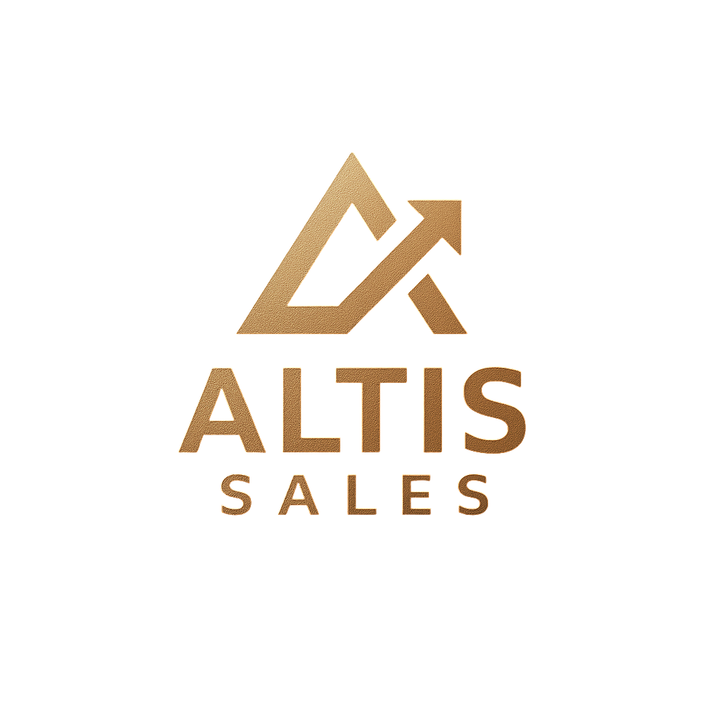

Pièces usinées sur plan
Fraisage et tournage CNC, du prototype à la série : aluminium, aciers, inox, laiton, plastiques techniques.

ALTIS SALES vous met en relation avec des usines qualifiées en Chine et ailleurs, et suit votre commande du plan à la livraison. Un seul interlocuteur en France, en français ou en anglais.
Fraisage et tournage CNC, du prototype à la série : aluminium, aciers, inox, laiton, plastiques techniques.
Éjecteurs, colonnes et douilles de guidage, bagues de centrage, buses, ressorts, inserts, compatibles avec les références HASCO et Meusburger.
Moules d'injection, inserts, électrodes, pièces de rechange et pièces de machines spéciales, d'après plan ou échantillon.
Pour : moulistes, plasturgistes, constructeurs de machines spéciales, services achats et maintenance qui veulent un fournisseur alternatif — pour réduire leurs coûts, sécuriser leurs approvisionnements ou absorber un pic de charge.
PDF et/ou STEP, matière, quantités, délai. Accord de confidentialité possible avant tout envoi.
Consultation des usines partenaires adaptées à votre pièce. Objectif : un devis sous 72 heures ouvrées.
Pour une première commande, validation sur échantillon ou première pièce avec rapport de contrôle.
Suivi de production, inspection avant expédition, livraison sur votre site et suivi après-vente.
Envoyez votre plan (PDF, STEP), la matière, les quantités et le délai souhaité :
quentin@altissales.fr +33 7 44 85 13 69
English: looking for a second source for CNC parts or mould components? Send your drawing to quentin@altissales.fr.